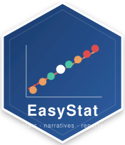

<<<<<<< HEAD # EasyStat

Automated Statistical Analysis, Visualization, and Multi-Format Narrative Reporting in R
Authors: Mr. Mahesh Divakaran & Dr. Gunjan Singh (Amity School of Applied Sciences, Amity University Lucknow) — Prof. Dr. Jayadevan Shreedharan (Gulf Medical University)
Overview
EasyStat bridges the gap between complex statistical output and actionable insight. A single function call delivers three outputs simultaneously: the statistical result, a plain-language narrative interpretation, and publication-ready tables — all rendered automatically in the RStudio Viewer (HTML), the R console (ASCII), or exported directly to Microsoft Word.
The core innovation is the Narrative Generator Module: conditional logic applied to p-values, effect sizes, and model-fit metrics produces statistically sound, human-readable explanations without any manual writing.
Installation
# From CRAN (when available)
install.packages("EasyStat")
# Development version from GitHub
# install.packages("devtools")
devtools::install_github("itsmdivakaran/EasyStat")
# From local source
install.packages("path/to/EasyStat", repos = NULL, type = "source")Quick Start
library(EasyStat)
# Linear regression with narrative
easy_regression(mpg ~ wt + hp, data = mtcars)
# t-Test
easy_ttest(mpg ~ am, data = mtcars)
# One-way ANOVA
easy_anova(Sepal.Length ~ Species, data = iris)
# Descriptive statistics for multiple variables
easy_describe(mtcars, vars = c("mpg", "hp", "wt"))
# Correlation heatmap
easy_correlation_heatmap(mtcars, vars = c("mpg", "hp", "wt", "qsec", "drat"))
# Export any result to Word
result <- easy_regression(mpg ~ wt, data = mtcars)
export_to_word(result, file = "report.docx", title = "Fuel Economy Study",
author = "Mahesh Divakaran, Gunjan Singh, Jayadevan Shreedharan")Four-Step Pipeline
| Step | Module | Role |
|---|---|---|
| 1 | Core Statistical Engine | Wraps lm(), t.test(), aov(), chisq.test(), var.test(), cor.test()
|
| 2 | Metric Extractor | Uses broom::tidy() / broom::glance() to extract p-values, effect sizes, CIs |
| 3 | Narrative Generator Module (core invention) | Applies conditional logic to produce plain-language explanations |
| 4 | Unified Result Object | Returns easystat_result S3 with tables, narrative, and optional plot |
Function Reference
Descriptive Statistics
| Function | Description |
|---|---|
easy_describe() |
21-statistic summary for one or more numeric variables |
easy_group_summary() |
Stratified descriptives by a grouping factor |
Inferential Tests
| Function | Test | Effect Size |
|---|---|---|
easy_regression() |
Linear regression (OLS) | R0b2, adjusted R0b2 |
easy_ttest() |
Independent / one-sample t-test | Cohen’s d |
easy_anova() |
One-way ANOVA with post-hoc context | 3b70b2 (eta-squared) |
easy_chisq() |
Chi-square independence & GOF | Cram0e9r’s V |
easy_ztest() |
One- and two-sample z-test | Cohen’s d |
easy_ftest() |
F-test for equality of variances | Variance ratio + CI |
easy_correlation() |
Pearson / Spearman / Kendall correlation & matrix | r, r0b2 |
Visualizations
| Function | Plot type |
|---|---|
easy_histogram() |
Histogram with normal-curve overlay |
easy_boxplot() |
Grouped box-and-whisker plot |
easy_scatter() |
Scatter plot with regression line and R0b2 |
easy_barplot() |
Count or mean (0b1 SE) bar chart |
easy_qqplot() |
Q-Q normality plot |
easy_density() |
Kernel density curve, optionally grouped |
easy_correlation_heatmap() |
Annotated pairwise correlation heatmap |
easy_autoplot() |
Smart dispatcher — picks the right plot for a result |
Theme & Export
| Function | Description |
|---|---|
theme_easystat() |
Consistent ggplot2 theme for all plots |
export_to_word() |
Formatted .docx report (flextable + officer) |
Output Modes
| Mode | Trigger |
|---|---|
| RStudio HTML Viewer | Auto-detected in interactive sessions |
| Console (ASCII) | Scripts, terminals, non-interactive sessions |
| Word (.docx) |
export_to_word() — one call, full report |
Running the Smoke Test
source(system.file("smoke_test.R", package = "EasyStat"))Runs 25+ assertions across all analysis, visualization, and export functions.
Citation
If you use EasyStat in your research, please cite:
Divakaran M., Singh G., & Shreedharan J. (2026). EasyStat: Automated Statistical Analysis, Visualization and Multi-Format Narrative Reporting in R (Version 2.0.0). Amity University Lucknow & Gulf Medical University. https://itsmdivakaran.github.io/Easystat/index.html